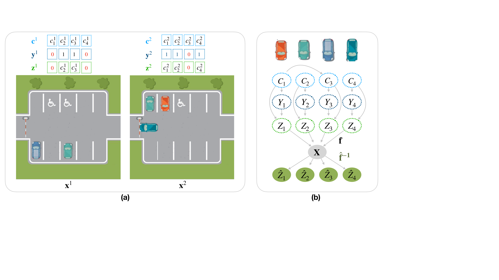
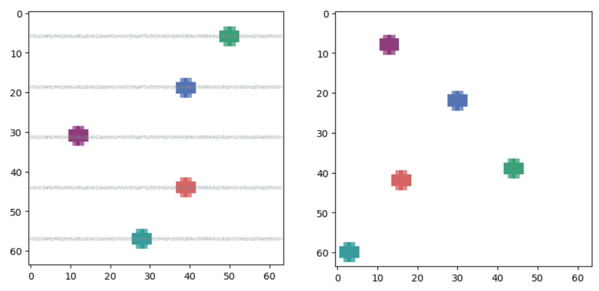
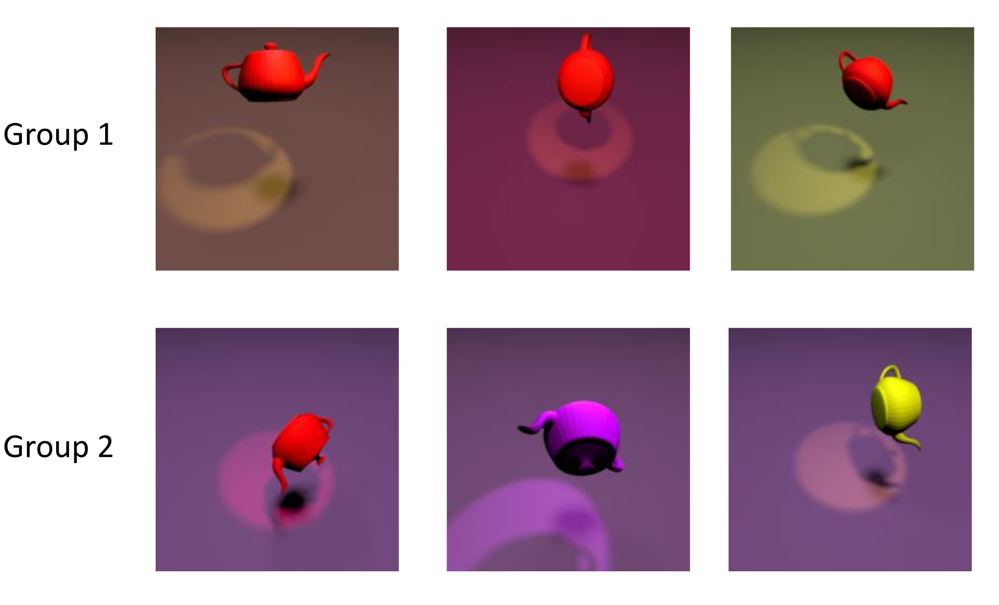

A Sparsity Principle for Partially Observable Causal Representation Learning
When each observation reveals only a varying subset of the latent causal state, enforcing sparsity in the learned representation is enough to recover the ground-truth variables — provably for linear and piecewise-linear mixing.
Most causal representation learning assumes every latent causal variable is captured in each high-dimensional observation. This paper instead studies an unpaired, partially observed setting, where each measurement reveals only an instance-dependent subset of the underlying causal state. The authors prove two identifiability results — one for linear mixing functions with no parametric assumptions on the causal model, and one for piecewise-linear mixing with Gaussian causal variables and known groups — both hinging on a single sparsity principle. They turn each result into a constrained-optimization method and recover ground-truth latents on numerical data, a multiple-balls dataset, and a new partially observable version of Causal3DIdent.
Overview
Causal representation learning (CRL) aims to recover high-level causal variables from low-level data such as images (Schölkopf et al. 2021). A common thread across identifiability results — from nonlinear ICA (Khemakhem et al. 2020; Hyvarinen et al. 2019) to more recent CRL — is the assumption that all latent causal variables are captured in every observation. But the world rarely cooperates: objects move out of frame, get occluded, or are simply absent.
This paper studies what the authors call the Unpaired Partial Observation setting, in which each observation is a function of only an instance-dependent subset of the underlying causal state. The running example is a stationary camera photographing a parking lot on different days: different cars are present and parked in different spots, and the task is to recover each present car’s position despite never observing the full scene.

The setting
Four sets of random variables describe the data-generating process. The causal variables \mathbf{C}=(C_1,\dots,C_n) live in an open, simply-connected latent space and follow a density p(\mathbf{C}) that may encode causal relations between them. A binary mask \mathbf{Y}\in\{0,1\}^n records which variables are measured in a given sample. Their Hadamard product gives the masked causal variables
\mathbf{Z} = \mathbf{Y}\odot\mathbf{C},
so z_j = c_j when the mask y_j=1 and z_j takes a fixed masked value (taken to be 0 in the theory) when y_j=0. Finally, an injective mixing function \mathbf{f} produces the observations \mathbf{X}=\mathbf{f}(\mathbf{Z}). Observations that share the same (unknown) partial-observability pattern \mathbf{Y}=\mathbf{y} form a group.
The goal is to recover \mathbf{Z} from \mathbf{X} alone. As usual in CRL, exact recovery is impossible; the target is identifiability up to permutation and element-wise linear transformation — i.e., a learned \hat{\mathbf{Z}} with \hat{\mathbf{Z}} = \mathbf{P}\mathbf{D}\,\mathbf{Z} for some permutation matrix \mathbf{P} and invertible diagonal \mathbf{D}.
A key structural condition is sufficient support index variability, adapted from work on sparse multi-task disentanglement (Lachapelle et al. 2023): for every variable i, the masks that omit i must jointly cover all the other variables, \bigcup_{\mathbf{s}\in\mathcal{S}\,:\,i\notin\mathbf{s}}\mathbf{s} = [n]\setminus\{i\}. Intuitively, this rules out two variables that are always masked together — which could never be told apart. The minimal set of n singleton masks satisfies it.
A sparsity principle for identifiability
The paper’s central insight is that, under perfect reconstruction, a single sparsity constraint on the learned representation breaks the rotational indeterminacy that otherwise plagues identifiability.
Linear mixing
For an injective linear \mathbf{f}, let \mathbf{g} be an invertible linear encoder and \hat{\mathbf{f}} an invertible continuous decoder. If both
\mathbb{E}\,\lVert\mathbf{X}-\hat{\mathbf{f}}(\mathbf{g}(\mathbf{X}))\rVert_2^2 = 0 \qquad\text{and}\qquad \mathbb{E}\,\lVert\mathbf{g}(\mathbf{X})\rVert_0 \le \mathbb{E}\,\lVert\mathbf{Z}\rVert_0
hold, then \mathbf{Z} is identified up to permutation and element-wise linear transformation. The zero-reconstruction term forces the encoding to lose no information (so it cannot be sparser than \mathbf{Z}); the sparsity bound then forces it to match the sparsity of the ground truth, which pins down the otherwise-free rotation.
Why sparsity alone fails for nonlinear mixing
Sparsity does not extend for free to nonlinear \mathbf{f}. The paper gives an explicit counterexample with \mathbf{C}\sim\mathcal{N}(0,\mathbf{I}_2), an independent uniform mask, and a nonlinear mixing built from \sinh(\mathbf{R}_{\pi/4}\mathbf{z})+\sinh(\mathbf{R}_{-\pi/4}\mathbf{z}) (with \mathbf{R}_\theta a rotation). The identity encoder satisfies both the reconstruction and sparsity conditions, yet every component of the recovered map still depends on both latent components — so identifiability fails.
Piecewise-linear mixing
The linear proof works because there exists a \mathbf{g} making \mathbf{g}\circ\mathbf{f} affine. The counterexample motivates restricting the function class until that property can be recovered. The authors show this holds for piecewise-linear \mathbf{f} when the causal variables are Gaussian (Assumption: \mathbf{C}\sim N(\boldsymbol{\mu},\boldsymbol{\Sigma})) and the masks are independent of the causal variables — a linear-Gaussian SCM with a missing-at-random observation pattern. Under partial observability, \mathbf{Z}\mid\mathbf{Y} becomes a possibly degenerate multivariate normal (singular covariance whenever a variable is masked), so the proof extends an identifiability theorem of Kivva et al. (2022) from non-degenerate to degenerate Gaussians.
The piecewise-linear result adds, on top of reconstruction and sparsity, a Gaussianity condition: the encoder output must be Gaussian within each group, \mathbf{g}(\mathbf{X})\mid(\mathbf{Y}=\mathbf{y})\sim N(\boldsymbol{\mu}_\mathbf{y},\boldsymbol{\Sigma}_\mathbf{y}). This requires knowing the group of each observation at training time (but not the mask value itself), so that observations from different \mathbf{Z} distributions can be separated.
From theorems to methods
Both results become constrained-optimization problems, solved with the Cooper Lagrangian toolkit (Gallego-Posada and Ramirez 2022) and the extragradient version of Adam (Gidel et al. 2018). The non-differentiable L_0 sparsity is relaxed to an L_1 budget \mathbb{E}\lVert\mathbf{g}(\mathbf{X})\rVert_1\le\epsilon, with \epsilon\in\{0.01,\,0.001\} in the experiments. For the piecewise-linear method, the Gaussian-per-group condition is encouraged with two moment-matching regularizers that push each group’s estimated skewness toward 0 and kurtosis toward 3:
\min_{\theta,\psi}\ \frac{1}{N}\sum_{i}\lVert\mathbf{x}^i-\hat{\mathbf{f}}_\theta(\mathbf{g}_\psi(\mathbf{x}^i))\rVert_2^2 + \sum_{g\in\mathcal{G}}\Big(\big|\widehat{\mathrm{skew}}_g\big| + \big|\widehat{\mathrm{kurt}}_g - 3\big|\Big) \quad\text{s.t.}\quad \frac{1}{nN}\sum_i\lVert\mathbf{g}_\psi(\mathbf{x}^i)\rVert_1 \le \epsilon .
Experiments
Throughout, recovery is measured by the mean correlation coefficient (MCC) — the average absolute Pearson correlation between learned and ground-truth latents under the best permutation. Higher is better; 1.0 is perfect.
Numerical data
On synthetic data the linear method is near-perfect when the problem is small or sparse, and degrades gracefully as it gets harder. With a linear-Gaussian SCM, average degree k=1 and \rho=50\% of variables measured, MCC stays at 0.99 up to n=20 latents and drops to 0.714 at n=40. Increasing the causal-graph density hurts (MCC 0.998 at k=0, 0.793 at k=3 for n=10), while measuring fewer variables per sample is actually easier — the single-variable regime (1\,\textsc{var}) reaches 0.998 versus 0.877 at \rho=75\%.
| Varying | Setting | MCC |
|---|---|---|
| n=5 | Lin. Gauss, k{=}1, \rho{=}50\% | 0.997 \pm 0.002 |
| n=20 | Lin. Gauss, k{=}1, \rho{=}50\% | 0.987 \pm 0.029 |
| n=40 | Lin. Gauss, k{=}1, \rho{=}50\% | 0.714 \pm 0.153 |
| k=0 | Indep. Gauss, n{=}10, \rho{=}50\% | 0.998 \pm 0.001 |
| k=3 | Lin. Gauss, n{=}10, \rho{=}50\% | 0.793 \pm 0.142 |
| \rho=1\,\textsc{var} | Lin. Gauss, n{=}10, k{=}1 | 0.998 \pm 0.002 |
| \rho=75\% | Lin. Gauss, n{=}10, k{=}1 | 0.877 \pm 0.096 |
For the piecewise-linear method the same qualitative trends hold — harder mixing (more layers m), more latents, or a higher measured ratio all lower MCC, while the causal-graph degree k has little effect. The authors find that a larger separation \delta between masked and unmasked values makes identification easier. They also report a persistent gap between their method and an oracle that is told the per-sample mask, which they attribute to the difficulty of enforcing Gaussianity through skewness/kurtosis alone — flagged as the method’s main empirical limitation.
Multiple balls
A rendered 2D dataset places b moving balls and exposes two regimes: a missing-ball setting (balls move only along x and disappear off-frame) and a masked-position setting (balls move freely and individual coordinates can be masked to a fixed value).

Across b\in\{2,5,8\} balls, MCC stays above 0.90 in every case, decreasing as more balls are added and consistently higher in the missing-ball setting (where there are b variables to recover) than in the masked-position setting (with 2b variables and x–y dependence).
| b | MCC — missing | MCC — masked |
|---|---|---|
| 2 | 0.963 \pm 0.012 | 0.946 \pm 0.005 |
| 5 | 0.950 \pm 0.011 | 0.939 \pm 0.003 |
| 8 | 0.928 \pm 0.004 | 0.901 \pm 0.002 |
PartialCausal3DIdent
Finally, the authors build PartialCausal3DIdent, a partially observable version of Causal3DIdent (Kügelgen et al. 2021), by sampling n=10 independent latents, applying a set of masks, and retrieving the corresponding rendered images. The rendering process is highly nonlinear and not piecewise-linear — violating the theory’s assumption — yet the piecewise-linear method is applied anyway, on the intuition that enough linear pieces approximate it.

Evaluated per object class with masking distance \delta=10, MCC stays above 0.80 for all seven classes, averaging 0.832\pm0.016 — evidence that the sparsity principle remains useful even on highly nonlinear, high-dimensional data outside the theorem’s strict assumptions.
Takeaways
The work reframes partial observability as a masking of an instance-dependent subset of latents and shows that, in this regime, sparsity is the right inductive bias for identifiability: enforcing that the learned representation be no less sparse than the ground truth recovers the causal variables up to the usual permutation-and-scaling ambiguity. The guarantees are clean for linear mixing and extend, with an added Gaussianity-per-group condition, to piecewise-linear mixing. The authors are explicit about the boundaries: piecewise-linear functions are a restricted class, knowing the group of each sample is a real requirement, and the Gaussianity constraint is hard to enforce in practice — leaving the gap to the oracle, and the move to fully general nonlinear mixing, as open problems.
The figures on this page are reproduced from the original paper, which is released on arXiv under CC BY-NC-SA 4.0. A copyable BibTeX entry for this page is generated below.
Citation
@inproceedings{xu2024,
author = {Xu, Danru and Yao, Dingling and Lachapelle, Sébastien and
Taslakian, Perouz and von Kügelgen, Julius and Locatello, Francesco
and Magliacane, Sara},
title = {A {Sparsity} {Principle} for {Partially} {Observable}
{Causal} {Representation} {Learning}},
booktitle = {Proceedings of the 41st International Conference on
Machine Learning (ICML), PMLR 235},
date = {2024-07-21},
url = {https://proceedings.mlr.press/v235/xu24ac.html}
}